Captured by love . --test fm_shots. Callout boxes come from each JSON sidecar; they are not in the PNGs.
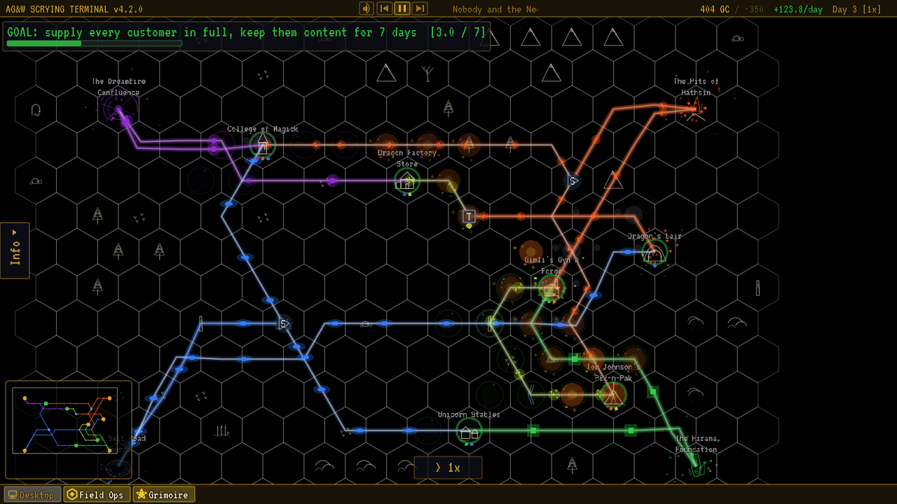
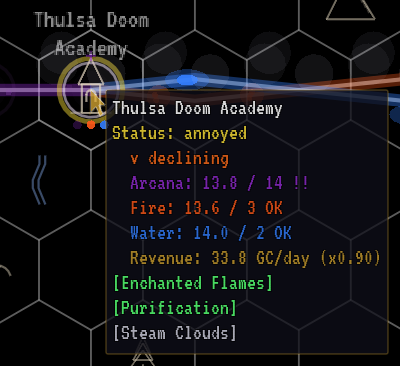
The Back Dor Confluence The Maha's Flame The Ikhlas Spring The Underdark Seam The Bog of Eternal Stench Thulsa Doom Academy Lilliput Stables Witcher Farms Crossroads Post Orkoz Market GOAL: supply every customer in full, keep them content for 5 days Thulsa Doom Academy Status: annoyed v declining Arcana: 13.8 / 14 !! Fire: 13.6 / 3 OK Water: 14.0 / 2 OK Revenue: 33.8 GC/day (x0.90) [Enchanted Flames] [Purification] [Steam Clouds] > 1x Info AG&W SCRYING TERMINAL v4.2.0 Day 1 [1x] +33.8/day 240 GC / -200 Nobody and the NeckRomancers - If It Don't Bite Nobody and the NeckRomancers - If It Don't Bite Desktop Field Ops Grimoire
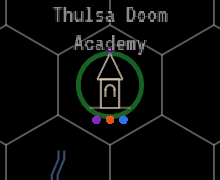
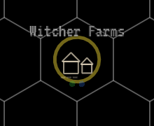
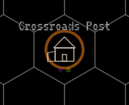
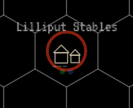
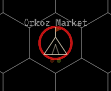
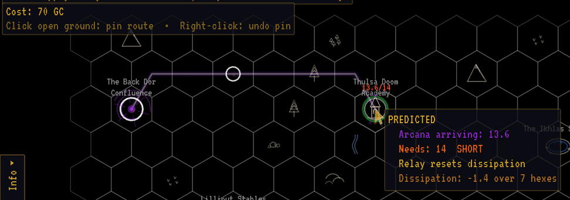
13.6/14 The Back Dor Confluence The Maha's Flame The Ikhlas Spring The Underdark Seam The Bog of Eternal Stench Thulsa Doom Academy Lilliput Stables Witcher Farms Crossroads Post Orkoz Market GOAL: supply every customer in full, keep them content for 5 days Cost: 70 GC Click open ground: pin route • Right-click: undo pin PREDICTED Arcana arriving: 13.6 Needs: 14 SHORT Relay resets dissipation Dissipation: -1.4 over 7 hexes > 1x Info AG&W SCRYING TERMINAL v4.2.0 Day 0 [1x] +0.0/day 500 GC / -200 Nobody and the NeckRomancers - If It Don't Bite Nobody and the NeckRomancers - If It Don't Bite Desktop Field Ops Grimoire
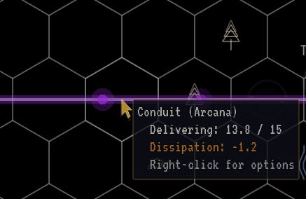
The Back Dor Confluence The Maha's Flame The Ikhlas Spring The Underdark Seam The Bog of Eternal Stench Thulsa Doom Academy Lilliput Stables Witcher Farms Crossroads Post Orkoz Market GOAL: supply every customer in full, keep them content for 5 days Conduit (Arcana) Delivering: 13.8 / 15 Dissipation: -1.2 Right-click for options > 1x Info AG&W SCRYING TERMINAL v4.2.0 Day 1 [1x] +37.6/day 240 GC / -200 Nobody and the NeckRomancers - If It Don't Bite Nobody and the NeckRomancers - If It Don't Bite Desktop Field Ops Grimoire
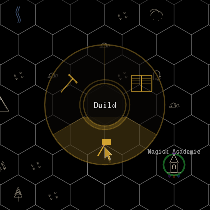
The Nightlight Nexus The Ashen Rift The Hollow Places Seep Puddleglum Bogs Magick Academie Bargain Bin Bats Hardhome Depot Fungal Fields Rogue Shoe Farms Mimic Estates Spike Nose Sales Burninator's Den Ye Dollar Generale Homeopathic Magick College GOAL: supply every customer in full, keep them content for 10 days || PAUSED Build Info AG&W SCRYING TERMINAL v4.2.0 Day 0 [1x] [P] +0.0/day 1000 GC / -500 Nobody and the NeckRomancers - If It Don't Bite Nobody and the NeckRomancers - If It Don't Bite Desktop Field Ops Grimoire
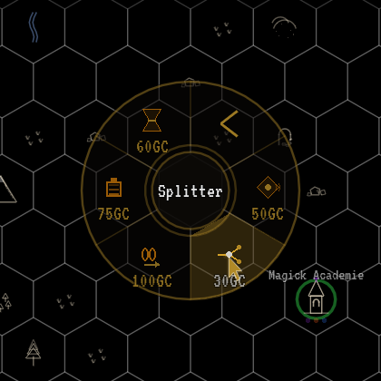
The Nightlight Nexus The Ashen Rift The Hollow Places Seep Puddleglum Bogs Magick Academie Bargain Bin Bats Hardhome Depot Fungal Fields Rogue Shoe Farms Mimic Estates Spike Nose Sales Burninator's Den Ye Dollar Generale Homeopathic Magick College GOAL: supply every customer in full, keep them content for 10 days || PAUSED [ PAUSED — press SPACE or click >> ] 50GC 30GC 100GC 75GC 60GC Splitter Info AG&W SCRYING TERMINAL v4.2.0 Day 0 [1x] [P] +0.0/day 1000 GC / -500 Nobody and the NeckRomancers - If It Don't Bite Nobody and the NeckRomancers - If It Don't Bite Desktop Field Ops Grimoire
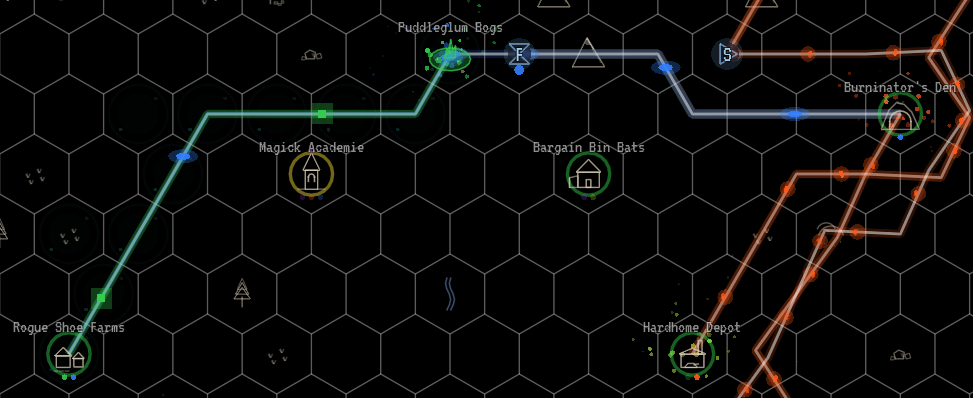
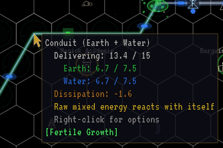
F
S
The Nightlight
Nexus
The Ashen Rift
The Hollow Places
Seep
Puddleglum Bogs
Magick Academie
Bargain Bin Bats
Hardhome Depot
Fungal Fields
Rogue Shoe Farms
Mimic Estates
Spike Nose Sales
Burninator's Den
Ye Dollar
Generale
Homeopathic
Magick College
GOAL: supply every customer in full, keep them content for 10 days
Conduit (Earth + Water)
Delivering: 13.4 / 15
Earth: 6.7 / 7.5
Water: 6.7 / 7.5
Dissipation: -1.6
Raw mixed energy reacts with itself
Right-click for options
[Fertile Growth]
> 1x
Info
AG&W SCRYING TERMINAL v4.2.0
Day 2 [1x]
+50.0/day
1092 GC
/ -500
Nobody and the NeckRomancers - If It Don't Bite
Nobody and the NeckRomancers - If It Don't Bite
Desktop
Field Ops
Grimoire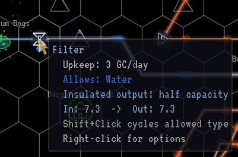
F S The Nightlight Nexus The Ashen Rift The Hollow Places Seep Puddleglum Bogs Magick Academie Bargain Bin Bats Hardhome Depot Fungal Fields Rogue Shoe Farms Mimic Estates Spike Nose Sales Burninator's Den Ye Dollar Generale Homeopathic Magick College GOAL: supply every customer in full, keep them content for 10 days Filter Upkeep: 3 GC/day Allows: Water Insulated output: half capacity In: 7.3 -> Out: 7.3 Shift+Click cycles allowed type Right-click for options > 1x Info AG&W SCRYING TERMINAL v4.2.0 Day 2 [1x] +50.0/day 1095 GC / -500 Nobody and the NeckRomancers - If It Don't Bite Nobody and the NeckRomancers - If It Don't Bite Desktop Field Ops Grimoire
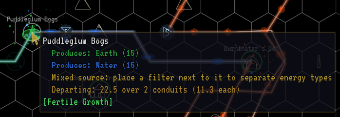
F S The Nightlight Nexus The Ashen Rift The Hollow Places Seep Puddleglum Bogs Magick Academie Bargain Bin Bats Hardhome Depot Fungal Fields Rogue Shoe Farms Mimic Estates Spike Nose Sales Burninator's Den Ye Dollar Generale Homeopathic Magick College GOAL: supply every customer in full, keep them content for 10 days Puddleglum Bogs Produces: Earth (15) Produces: Water (15) Mixed source: place a filter next to it to separate energy types Departing: 22.5 over 2 conduits (11.3 each) [Fertile Growth] > 1x Info AG&W SCRYING TERMINAL v4.2.0 Day 2 [1x] +50.0/day 1097 GC / -500 Nobody and the NeckRomancers - If It Don't Bite Nobody and the NeckRomancers - If It Don't Bite Desktop Field Ops Grimoire
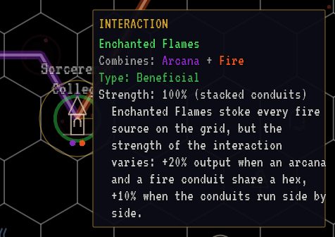
The Weave's Knot Avernus Vent The Nelwyn Well Sorcerer's College Tyrion Farms The Secret Garden Center GOAL: supply every customer in full, keep them content for 3 days [1.0 / 3] > 1x Info INTERACTION Enchanted Flames Combines: Arcana + Fire Type: Beneficial Strength: 100% (stacked conduits) Enchanted Flames stoke every fire source on the grid, but the strength of the interaction varies: +20% output when an arcana and a fire conduit share a hex, +10% when the conduits run side by side. AG&W SCRYING TERMINAL v4.2.0 Day 1 [1x] +38.0/day 189 GC / -100 Nobody and the NeckRomancers - If It Don't Bite Nobody and the NeckRomancers - If It Don't Bite Desktop Field Ops Grimoire
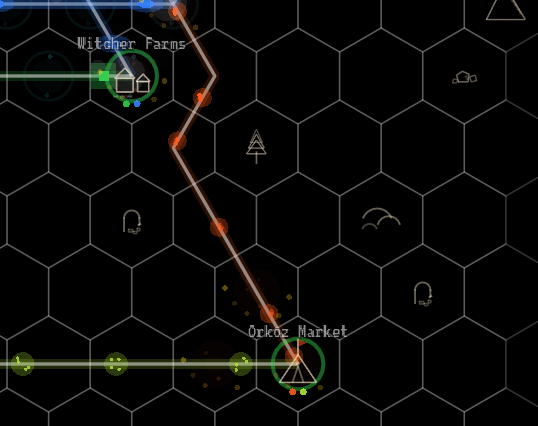
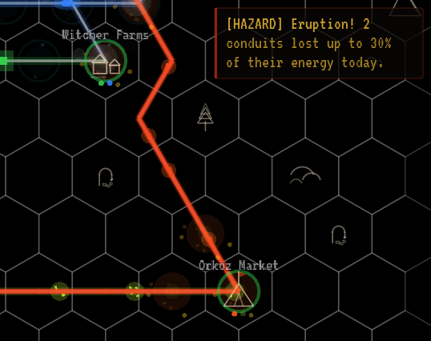
R S S S S The Back Dor Confluence The Maha's Flame The Ikhlas Spring The Underdark Seam The Bog of Eternal Stench Thulsa Doom Academy Lilliput Stables Witcher Farms Crossroads Post Orkoz Market GOAL: supply every customer in full, keep them content for 5 days > 1x [HAZARD] Eruption! 2 conduits lost up to 30% of their energy today. Info AG&W SCRYING TERMINAL v6.6.6 Day 3 [1x] +120.6/day 833 GC / -200 Nobody and the NeckRomancers - If It Don't Bite Nobody and the NeckRomancers - If It Don't Bite Desktop Field Ops Grimoire
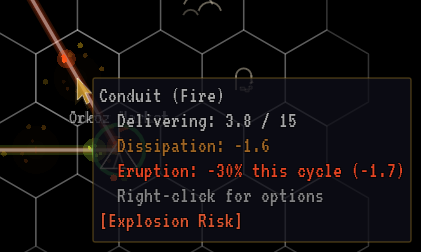
R S S S S The Back Dor Confluence The Maha's Flame The Ikhlas Spring The Underdark Seam The Bog of Eternal Stench Thulsa Doom Academy Lilliput Stables Witcher Farms Crossroads Post Orkoz Market GOAL: supply every customer in full, keep them content for 5 days Conduit (Fire) Delivering: 3.8 / 15 Dissipation: -1.6 Eruption: -30% this cycle (-1.7) Right-click for options [Explosion Risk] > 1x Info AG&W SCRYING TERMINAL v6.6.6 Day 3 [1x] +120.6/day 840 GC / -200 Nobody and the NeckRomancers - If It Don't Bite Nobody and the NeckRomancers - If It Don't Bite Desktop Field Ops Grimoire